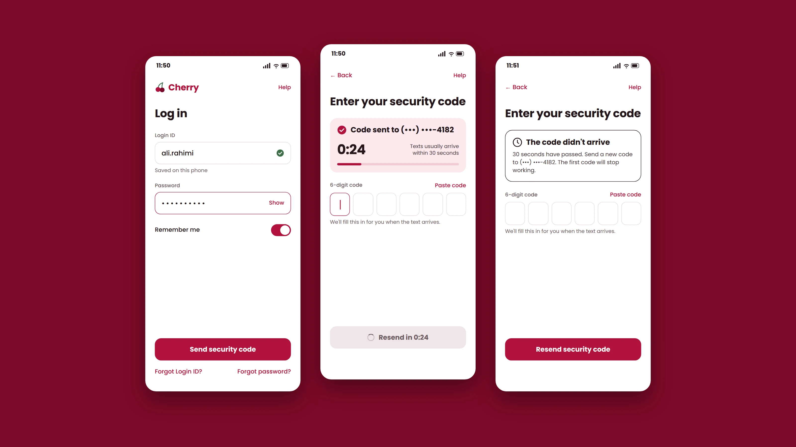
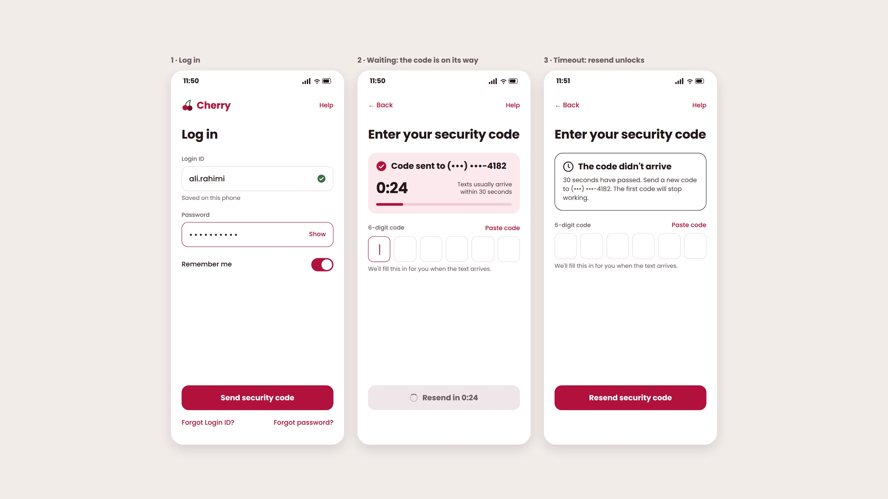

A real app store review of a Canadian banking app. The reviewer says the app asks for a text code at every login, the “Remember me” box seems to do nothing, and he has to tap resend four or five times before a code arrives. He is shopping for another bank. I renamed the bank Cherry and changed its colours.
The reviewer wrote that the code “never sends the first time.” I separated what he saw from what he concluded. He saw that he tapped, no code came, he tapped again several times, and then a code came. He concluded that the first one was never sent. From his side of the screen he has no way to know which tap produced the code that arrived.
That left two places where the problem could be.
I would check the send logs before designing: one message per tap, and whether each was delivered or failed. I would look at the carrier side first, because that fix sits outside the app team and it is the most expensive answer to find out late.
A waiting state for Cherry clients who can't log in, to end the repeated tapping caused by no feedback between the tap and the handoff.
I deliberately left the carrier delivery problem to the SMS provider team.
| Frustration | Decision | Why |
|---|---|---|
| No sign that his request is in progress, so he keeps tapping | Solving | It is what stops him logging in tonight, and the app team owns it. |
| A code is required at every login | Left out | It is a security requirement and it works as intended. |
| “Remember me” does not save the password | Left out | It saves the Login ID by design. It annoys him, but it does not block the login. |
| The text message is slow or never delivered | Left out | It belongs to the SMS provider team. |

The share of login attempts that end in a successful login within two minutes of the first code request.
The screens were drawn with Claude from my design decisions. Cherry is a made-up bank, and the Login ID and phone number are sample data.